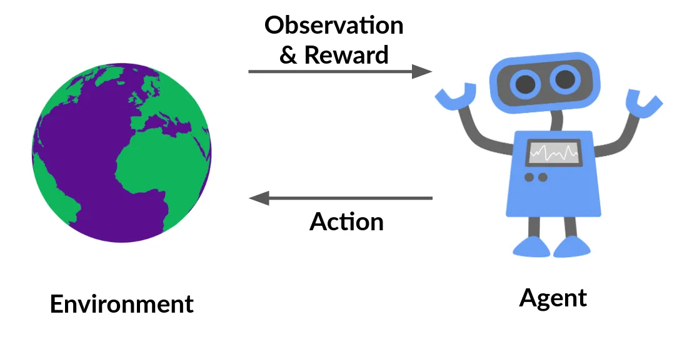
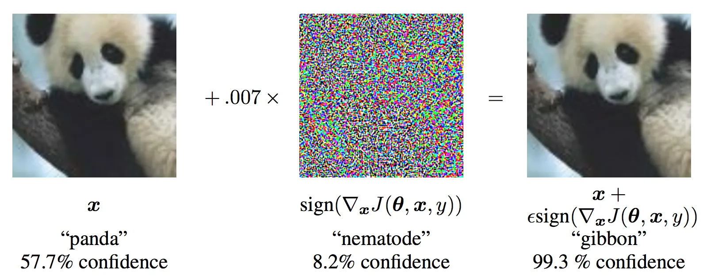
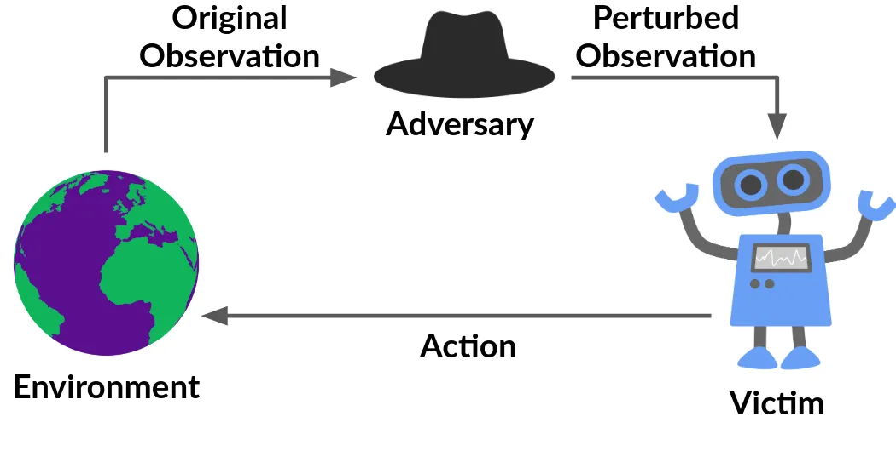
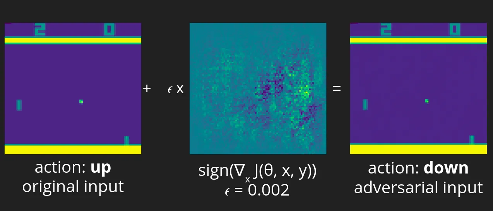
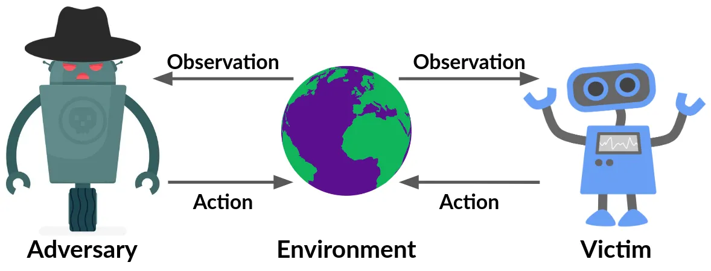
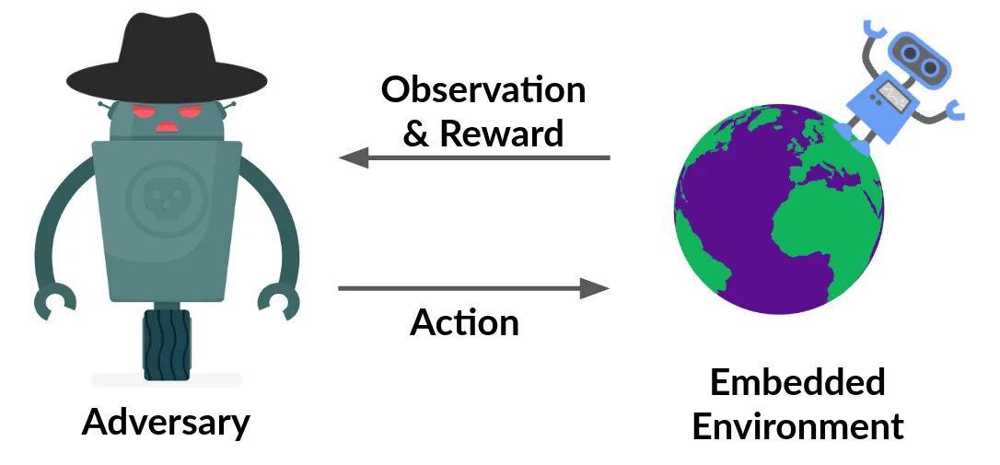
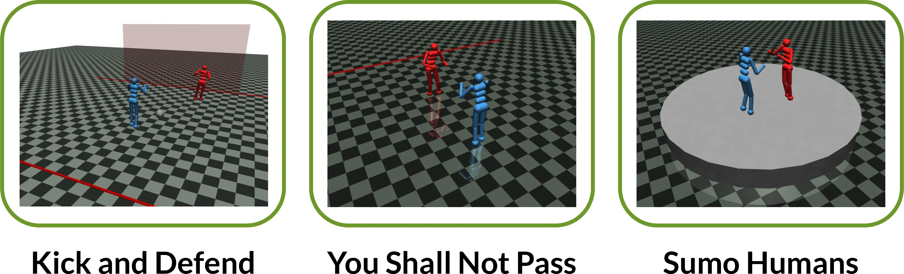

Team
$3^{rd}$ years -
- Madhuparna Bhowmik
- Akash Nair
- Saurabh Agarwala
$2^{nd}$ years -
- Videh Raj Nema
- Kinshuk Kashyap
- Manav Singhal
Mentored by -
- Moksh Jain
Introduction and Background
Reinforcement Learning
Reinforcement Learning (RL) is a branch of Machine Learning based on learning from rewards and punishments. It involves a feedback loop between the agent(s) and the environment, bounded by a mathematical framework. The objective of the agent(s) is to learn a function(s) that exhibits desired behavior in an environment.

This is a very simple organization of the RL framework and can become very complicated when it comes to applications in real-world settings. There can be multiple issues like using function approximators, multiple agents, adversaries, a poor model of the world, stability and scalability issues, etc.
We aim to explore one such direction in this project.
Deep Reinforcement Learning
The scalable applications of Reinforcement Learning are accomplished by blending RL methods with the representational capacity of Deep Learning models like Neural Nets. The state and action space of the environment can be exponentially large in the real-world settings, and hence the traditional Tabular RL framework cannot be used, even with an asymptotically infinite amount of computation power available.
Hence we make the use of function approximators (specifically Neural Nets) to learn the functions like the policies and the value-functions. These functions essentially correspond to the “behavior” of the agent(s) in the environment.
As we all know, Neural Nets are extremely good at approximating functions and learning complex behaviors from its applications in other Deep Learning domains like Computer Vision and NLP. They prove to be effective even in RL settings, though the learning process needs certain bells & whistles to work efficiently and effectively.
There have been a large number of wide and successful applications of Deep RL in the recent years ranging from reaching super human-level performance in playing games like Go, Chess, Atari, Dota2, etc., Online advertising, applications in Medicine for Protein Folding, robotics, and many more. The list goes on!
But are the systems robust enough? Can they be failed? What vulnerabilities do they have? Do they really achieve super human-level performance?
Let us elucidate upon this question with an example from Supervised Learning -

This is a work from Goodfellow et al., 2015 and shows the existence of Adversarial examples in Computer Vision. Given is an image of Panda, which is classified correctly with a probability of around $57.7\%$. The middle of the figure seems the addition of seemingly random noise times a small constant factor to the original image, and the resulting image seems to be almost the same as the original. Still, it is classified as a Gibbon with $99.3\%$ confidence by the same Neural Network!!
This result looks bizarre, but actually is nothing but a construction of adversarial examples for the corresponding clean example. The image in the middle that looks like noise is not actually some random permutation of the pixels; instead it is a carefully computed perturbation that is specifically designed for the model to make a mistake.
Objectives
You might be wondering if such adversarial attacks exist in Reinforcement Learning too, and the answer is Yes they do! The objective of this project was to explore Adversarial attacks in Single as well as Multi-Agent domains, and study their effectiveness against existing state-of-the-art (SOTA) works. We also studied Defense mechanisms to resist such attacks.
We focussed on the following two domains:
Pixel-Based attacks Attacking Deep RL systems that take image pixels as the state (or observation) input. We use Atari 2600 games (in particular Pong) as a benchmark to test the attack in White-box as well as Black-box settings. This is inspired directly from the way adversarial examples are generated in Supervised settings.
Adversarial Policies Attacking agents trained with Deep RL methods in Competitive zero-sum continuous control robotic environments from the MuJoCo simulator. The attack is accomplished via training an Adversarial policy with Black-box access to the environment. This Multi-Agent Thread model closely resembles the real-world attacks.
Pixel-Based attacks

This class of adversarial attacks involves the systems where the adversary can be a part of the agent-environment loop. It need not have complete information about the agent/victim. The attacks also exist in Black-box conditions, due to the Transferability of adversarial examples. We deal with both settings.
Most of these attacks are studied in Computer Vision but can be applied in a similar fashion in RL, where the input state-space to the Neural Net is the pixels. There are multiple approaches to achieve this with a common goal for all. The goal is to -
-
Find the input features that are most sensitive to class change (change in the action executed by the agent in RL).
-
Make a perturbation, i.e., change the pixels slightly such that the network misclassifies the input, but the change is visually imperceptible to humans. For RL, it would be equivalent to forcing the agent to take the wrong action.

This an illustration of the FGSM attack method on the Atari game Pong. First, we train a policy to play Pong with the Proximal Policy Optimization (PPO) algorithm for about 20 Million time steps. The Pong agent becomes extremely good at playing the game and is able to beat the opponent most of the time. Then we apply the attack method (refer to this post for more details). The results we obtained clearly show the effectiveness of the adversarial attack carried out.
For further illustration, please see the supplementary video.
Adversarial Policies
The constraint that the adversary can be a part of the agent-environment loop can be unrealistic in certain cases, especially in real-world applications.

Hence we have a more realistic multi-agent threat model, where the adversary influences the other agent or the victim by taking certain adversarial actions, which in turn affect the victim’s observations. So this is different from the pixel attacks where the adversary could perturb the input directly. This is commonly seen in various applications like self-driving cars. In such cases, the adversary cannot directly manipulate the pixels from the camera on the car, or it cannot do things like make a building disappear. Hence this form of attack is applicable in real-world settings.

We make a simplification by making the victim agent a part of the environment itself. What this means is that we fix the victim’s parameters, and by doing so, we essentially make it a part of the environment. Doing this, now we have a single-agent RL problem, where the agent is the adversary.
And this is not an unrealistic assumption. In common applications of reinforcement learning or machine learning in general, we train a system and then freeze or seal it for deployment. Hence the attack can happen in such a situation.

These are the environments we consider. Such environments closely resemble real-world settings. All three are created using MuJoCo. Kick-and-Defend is a football type environment called, where the objective of the kicker is to kick the ball into the goal post, and the goalie defends it. Next is an environment called You Shall Not Pass, where the aim of this runner is to cross the finish line with a stable gait, and the blocker aims to stop it. And lastly, a Sumo environment, where the objective of both the agents is to knock the other one out.
Attack Procedure
-
The attack is implemented in a different and more realistic manner here. Unlike the Pixel attacks, the adversary is no longer a part of the agent-environment loop. It can affect the victim only through its actions. We show the results in the Kick-and-Defend environment with the Kicker as a victim and the Goalie as an adversary.
-
We embed the victim in the environment (fix its policy parameters), treating the adversary and the environment as a Single-agent system. Then we train an adversarial policy (MLP and LSTM) with Proximal Policy Optimization (PPO) and Black-box access to the victim policy’s actions, for about 20 Million time steps, which is less than 3% of the time steps used to train the victim agents (via self-play).
-
The adversarial agent is trained with a sparse reward at the end of the episode, positive when it wins the game and negative when it loses or ties.
Observations
Following are some important observations from the attack procedure:
-
Despite being trained for less than 3% of the time steps, the adversary is successfully able to beat the victim with high win-ratio. This is an important point as the policies that were attacked were the SOTA self-play methods in these environments, which are trained explicitly to be robust to all opponents.
-
The adversary does not beat the victim by becoming strong opponents; instead by seemingly random behavior. Also, the same adversarial policy is able to “fool” different victim policies trained with different random seeds.
-
The adversary does not win just because it is an out-of-distribution policy. The adversary wins by taking actions that are naturally adversarial to the victim policy network. The activations recorded in the victim policy network are very different from the usual (GMM & t-SNE visualization). Clearly, the victim and the opponent are not in Nash equilibrium.
Defense Mechanisms
We also studied various Defense methods that have been proposed to resist such attacks. Sadly, there is no single defense system developed yet that can be used effectively against the respective attack methods. There have been a few methods introduced, but either they work only for certain adversarial policies and not against the others, or they do not work against stronger attacks.
To know more about the defensive systems, refer this and this. These were studied as a part of this project.
Results and Conclusion
The existence of such attacks shows the vulnerabilities of function approximators like Neural Nets and forces us to rethink about Generalization in Machine Learning. It is not that these attacks are a characteristic property of Deep Learning models like Neural Nets. They exist even in the most linear Machine Learning models that we see. Since Neural Nets are built on these architectures, they inherit this flaw.
Also, sometimes it is not the algorithm or the function approximator architecture that might be responsible for adversarial attacks. As we saw in the Adversarial Policies section, the victim and the opponent where clearly not in Nash Equilibrium, because if they would have been, then no adversary would be able to exploit the victim. This suggests that there might be some inherent flaw in the Optimization procedure or the training procedure that causes the occurrence of such attacks.
Nevertheless, analyzing adversarial attacks encourages us to build more robust systems and be prepared not only for a good average-case but also for a good worst-case performance.